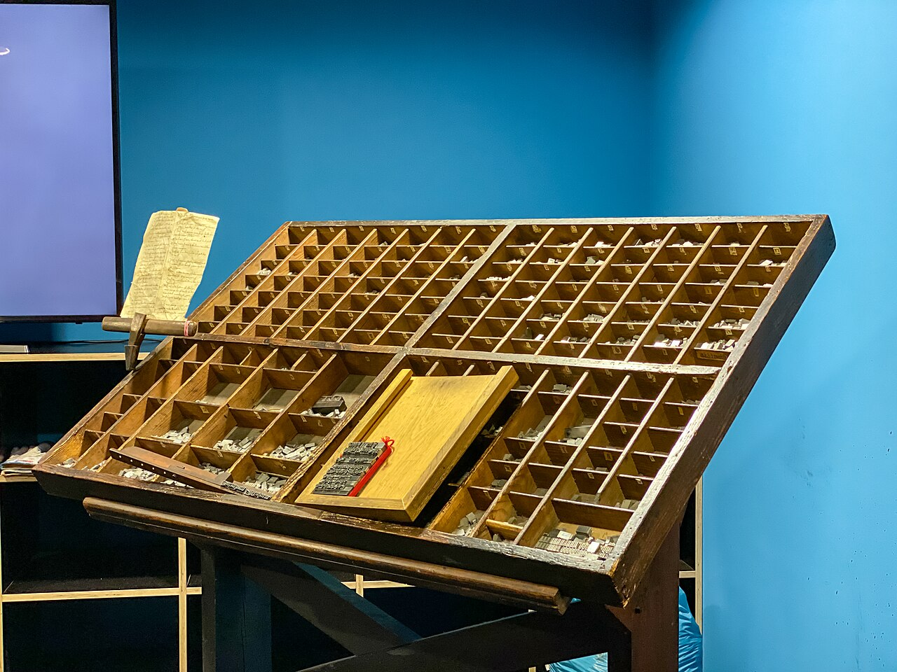
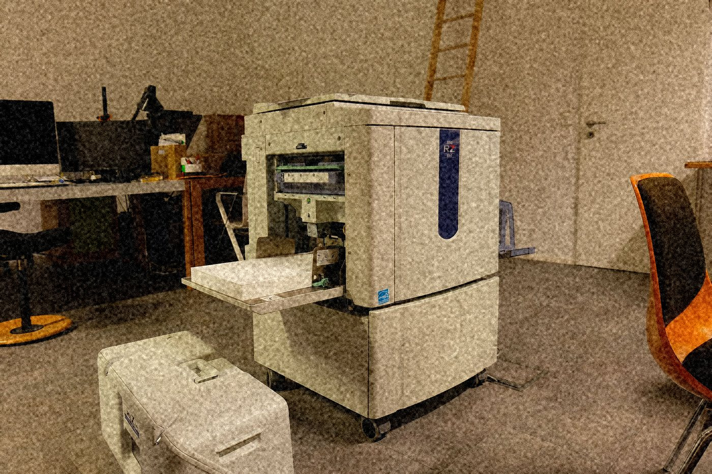

Halcyanide · CC BY-SA 4.0
BLK-01占 7 栏
凹版重压
字与图形的边缘有一道 0.5–1px 的凸起，用实色加一层朝左上的高光做出来。方向全页统一，只此一个方向；换方向就不是同一台机器压的了。
重压只发生在边缘，中间不许加模糊。模糊会让纸看起来是软的，被凹版压过的纸是硬的。
- 凸起
0.5px/1px - 方向 左上，全页统一
- 中间 不加模糊
JAZZ INTAGLIO WALL
这张是 1961 年 3 月在底特律录的，母带上有两处磁带拼接。

dronepicr · CC BY 2.0
Thomas Quine · CC BY 2.0
Willi Heidelbach · CC BY 2.5SET-01
板块之间不留白，边界全靠裁切错位：错位处露出底部的 #0B0D12，不用投影伪造，也不做旧。往下滚，同一行的三块以 1.0 / 0.92 / 1.06 三种速率错动。
Halcyanide · CC BY-SA 4.0
BLK-01占 7 栏
字与图形的边缘有一道 0.5–1px 的凸起，用实色加一层朝左上的高光做出来。方向全页统一，只此一个方向；换方向就不是同一台机器压的了。
重压只发生在边缘，中间不许加模糊。模糊会让纸看起来是软的，被凹版压过的纸是硬的。
0.5px / 1pxBLK-02占 5 栏
油墨被压进粗纹纸的沟里，堆在边缘，形成一条比字身更深的边。这条边不用投影，用实色；错位处露出的那一道黑就是底。
堆积的厚度按块写死，一块只有一种厚度，像一版只走一次墨。全页 12 块，厚度从 0.5px 到 1px 排成一条线。
0.5px / 1px#AF74BEWilli Heidelbach · CC BY 2.5
BLK-03占 4 栏
这一块的裁切边错开 4px，是全页最小的一块。错位量逐块写死，不随机也不做旧：两块之间的距离就是这一面墙的脾气。
4px24pxBLK-04
每块向容器外出血 24px。最窄的一块只占 2 栏，正文竖排，行距 24px；字从上往下走，读到一半会撞上裁切边。
被裁掉的内容看得出是活字盘的一条木边、半个台面或一段滚筒——不留完整主体。
24px6px
Scrud123 · CC BY-SA 3.0
BLK-05占 7 栏
图像一律做高对比裁切，处理成双色加 60 线粗网半调，网屏角 15°，保留胶片颗粒与污点。不做旧、不加滤镜，也不提供彩色原片。
双色的两版是凹版紫墨 #AF74BE 与油墨黑 #0B0D12。换色一次解决对比与默认色带两项：紫墨对底 5.61:1，色相 287.8°，离开 UI 蓝 71°、离开 #A855F7 17°、离开 #EC4899 42°。
15°#AF74BE + #0B0D1214px（全页最大）BLK-06占 7 栏
图标全部自绘，取自铜管乐器与录音设备，画在 20 单位网格上、线宽 1.2px、线端收细。线色只用纸白 #D8D4C6 或紫墨 #AF74BE，不用彩色字形，也不用表情符号。
「音轨」是带波峰的横线；「母带」是两个同心方，不用圆；「场次」是细长三角。三个形状各自只表达一件事，认错不了。
20 单位1.2px#D8D4C6 / #AF74BEThomas Quine · CC BY 2.0
BLK-07占 6 栏
辅助数字用等宽字族，母带编号与录音年份右对齐成列：编号写 DET-1961-088，年份一律四位，同一年录的两盘母带靠末尾三位流水号分开。
编号里的 DET 是底特律的场，1961 是录音年份，088 是那一季第 88 盘。这一列数字是整面墙上唯一不允许错位的东西。
DET-1961-08819612 处BLK-08占 3 栏
场次按细长三角编号，一季排到 SE-06；母带、场次、印版各占一行，归档号把三行串起来。
场次表右列的数字一律右对齐，读起来是一列，不是一堆数。
SE-01—SE-0611px24pxdronepicr · CC BY 2.0
BLK-09占 7 栏
档案照片一律做高对比裁切，主体必须缺掉一部分：半个乐器、半张侧脸、一段琴键，或者这里——半格铅字。画面里没有一样东西是完整的。
档案缺口：这套语料里没有爵士唱片封套本身，12 块拼贴用的是同一时期印版工艺的实物照片（活字、铅字盘、丝网台、街机柜的漆面），缺口逐条记在 assets/CREDITS.md。把这里的图当成「当年那张唱片」，是读错了。
4pxCREDITS.mdBLK-10占 4 栏
每块右下角有一枚 1px 见方的油墨污点，位置与大小按当年在唱片内袋上量到的 12 处飞溅逐个记录，不重复。
它把「这面墙是机器压出来的、而且压得不干净」留在页面上。干净利落的拼贴不会自带污点。
1px × 12 处13px
Kaethe17 · CC BY-SA 4.0
BLK-11占 5 栏
12 块以 1.0 / 0.92 / 1.06 三种速率滚过，同一行的三块速率也必须不同，差值随滚动线性变化。档位切换用 240ms 阻尼过渡。
窄屏把速率差压到 0.96–1.04，横向的错开变弱，纵向的裁切错位一个像素都不动。
1.0 / 0.92 / 1.060.96–1.04240msBLK-12占 7 栏
这面墙只在底部留 160px 的黑。留白是因为压到最后一块时油墨走干了，不是因为要喘气。
点任意一块拼贴，那一块的裁切边高光会沿边顺时针走一圈（200ms，四段各 50ms），同时该块编号在 BLK-XX 基础上递增一位。
160px200ms / 四段凹版的油是压在纸里的，不是刷在纸上的：墨被挤进粗纹纸的沟，字身中间只剩薄薄一层，边上却堆出更高的边。这一条做对了，整面墙才像被一台机器压过，而不是被排出来。
第一层是实色字身，第二层是沿左上的 0.5px 高光，第三层是裁切边错位后露出的一道底黑。三层都是实色，没有一层是模糊或投影——投影会让纸看上去是浮起来的，而这块纸是嵌进去的。
错位与出血是两件事：错位是这块拼贴跟邻居的关系（4–14px），出血是这块拼贴跟容器外的关系（24px）。两件事各写一个值，混在一起就会看起来像排版事故。
0.5px — 1px，随板块移动方向在两者之间切换#0B0D12，不用投影伪造SE-06。错误码 GROOVE-28：这一版的沟槽只压到 62µm，凹版该有的深度是 78µm，浅了 16µm。唱针走到第 2 面第 3 首的中段会跳一次槽；母带上的两处磁带拼接照旧读，只是接不上。
62µm（应为 78µm）4–14px，逐块写死，方向不随错误改动24px，向容器外，方向不变0.5px 与 1px，仍在左上13.10:1，主色对底 5.61:1#0B0D12 58% / 主色 #AF74BE 28% / 强调 #D8D4C6 14%| 场次 | 母带编号 | 录音年份 | 沟槽深度 | 状态 |
|---|---|---|---|---|
SE-01 | DET-1961-081 | 1961 | 78µm | 已压进版面 |
SE-02 | DET-1961-084 | 1961 | 78µm | 已压进版面 |
SE-03 | DET-1961-088 | 1961 | 62µm | 沟槽不足，错误码 GROOVE-28 |
SE-04 | DET-1961-092 | 1961 | 77µm | 已压进版面 |
SE-05 | DET-1962-014 | 1962 | 78µm | 已压进版面 |
SE-06 | — | — | — | 还没进档案 |
这张唱片还没有母带信息。把盘标上的编号填进左上角，我们会去查档案。
查档案队还没接到这一盘。沟槽深度复检排在 06:20 的压版窗口，到窗之前 SE-03 这一行保持 62µm，唱针照样会跳槽。
已复检块数 0 / 12 沟槽复检次数 0
BLK-01 槽深 待复检BLK-02 槽深 待复检BLK-03 槽深 待复检BLK-04 槽深 待复检BLK-05 槽深 待复检BLK-06 槽深 待复检BLK-07 错位量 5px 待复测BLK-08 错位量 11px 待复测BLK-09 错位量 4px 待复测BLK-10 错位量 13px 待复测BLK-11 出血量 24px 待复测BLK-12 出血量 24px 待复测24px × 406:20 开，当天只开一次六张图版全部是印版工艺的实物照片：活字、铅字盘、金属活字、丝网印刷台、孔版数码印刷机、街机柜的漆面。每张都做高对比裁切，主体缺掉一块；署名标在图上，也逐张记在 assets/CREDITS.md。这套语料里没有爵士唱片封套本身，缺口就写在这段里，不拿别的照片充数。
Willi Heidelbach · CC BY 2.5Thomas Quine · CC BY 2.0dronepicr · CC BY 2.0Scrud123 · CC BY-SA 3.0Kaethe17 · CC BY-SA 4.0Halcyanide · CC BY-SA 4.0位移只跑 transform 与 opacity，不做模糊、不做色彩插值，也不做回弹。滚动推进的是错动，不是位移：同一行的三块各走各的速率，版面不会散。
1.0 / 0.92 / 1.06 三种速率错动，同一行的三块速率也不同，差值随滚动线性变化；图在框内上下各走 12px，框不动。档位切换用 240ms 阻尼过渡，缓动 cubic-bezier(0.3,0.85,0.35,1)。0.5px 与 1px 之间切换，每次 12ms 阶跃，不缓动；方向始终左上。1px 油墨堆积高光，120ms；指针离开即收回。200ms，再按面积从大到小逐块压进版面：每块 200ms、间隔 50ms，阶跃落下、无回弹。第一块是占 7 栏的 BLK-01。260ms，彼此错开 60ms。24px 唱针图形作光标，针尖 1px，落点对准裁切线的左上角。50ms、共 200ms，同时该块编号递增一位，状态区里「已复检块数」跟着加一。减少动态时的再发明（prefers-reduced-motion: reduce）：速率错动与分段推出停止推进，但裁切拼贴机制完整静态保留：12 块的 4–14px 错位、24px 出血余量与左上单向边缘高光全部按原值静态呈现，不把错位量归零、不改窄屏的 4–8px、不动栏位比例。过渡只压到 120ms 的不透明度切换：换档不再阻尼滑动而是直接落在新档位，翻碟不再分段推出而是直接换图与换编号，点块的走边改成整圈一次性点亮 120ms，针形光标换成默认箭头。
适合音频设备与音乐产品品牌站（黑胶唱机、监听耳机、录音软件），以及高端文化消费品的形象页与收藏品售卖页（限量黑胶、艺术印刷品）。不适合需要明亮积极调性的消费品牌；信息密度高的后台系统；不能使用人物档案照片授权的项目——这一版已经把人物照片整条去掉，只留印版与机器，缺口写在图版区与 assets/CREDITS.md。

.jpg){kind=link}
.jpg){kind=link}